FORTE RTE for icom OS Smart Devices (e.g. MRX/MRO)
This is a demonstration container running the 4DIAC runtime environment called FORTE. This container can be programmed with the corresponding IDE to set up a Soft-PLC on the icom OS smart device. To support device functionality and interaction the following functionblocks were created:
- a general cli block to send single commands to the command line interface
- an output block to control the outputs (if you are using at least one MRcard SI)
- an input block to get the status of digital inputs
- an email block to send messages via email
- a sms block to send messages via sms
- a restart block to reboot the device if problems occured
- an info-led block to use the info-LED of your device
In order to program the PLC please follow these steps:
- Download the corresponding IDE for you operating system
- Click here to download the INSYS-Functionblocks
- Unzip the folder
- Move folder to "Path to your 4DIAC-IDE"/typelibrary
Setup
Development PC
with IDE
→
INSYS icom SmartBox Container with FORTE
For more information and support see the 4DIAC documentation.
Function Blocks
Available function blocks for controlling the MRX/MRO (CLI (Command Line Interface), Info_LED, Digital I/O) and sending messages (Email, SMS, MQTT Publish/Subscribe)
CLI - Function Block
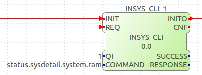
Specify the Command that shall be sent to the CLI. For further information about CLI commands, please see your routers online documentation under Help>Documentation>CLI.
MRX Digital I/O - Function Blocks
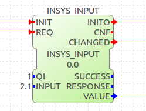
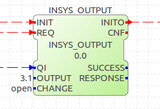
Email & SMS - Function Block
 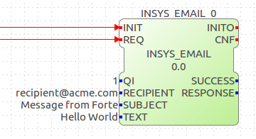
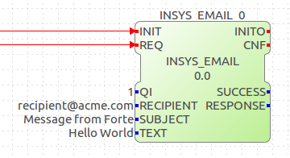
Attention: For the SMS Function Block to work, an active SIM-card needs to be present in the wireless router.
MQTT Publish/Subscribe
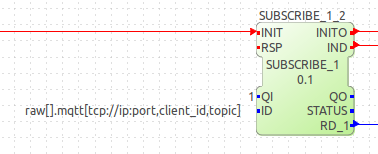
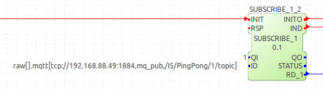
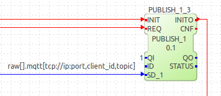
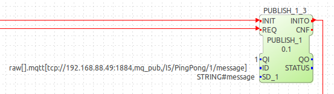
Attention: When using the raw[] layer in your ID, the RD_1 of your subscriber and the SD_1 of your publishers must be connected to a STRING type data. Also, you can only use PUBLISHER_1 and SUSBCRIBER_1, not others function blocks wit more inputs or outputs. However, it is possible to have multiple instance of Publisher and Subscriber in your application if the client_id remains identical.
Info-LED - Function Block
Available MODEs: "on"/"off"/"flashing"
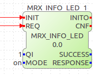
Restart - Function Block
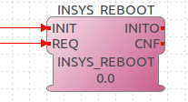
Beware:
- Firmware version of icom OS must be 2.x or higher.